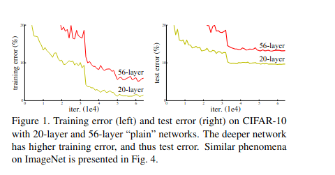
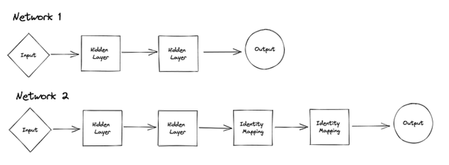
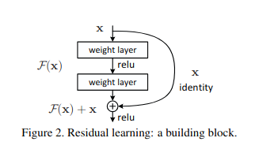
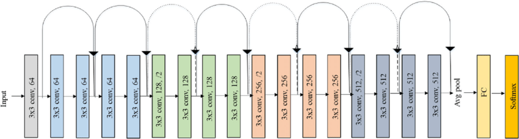
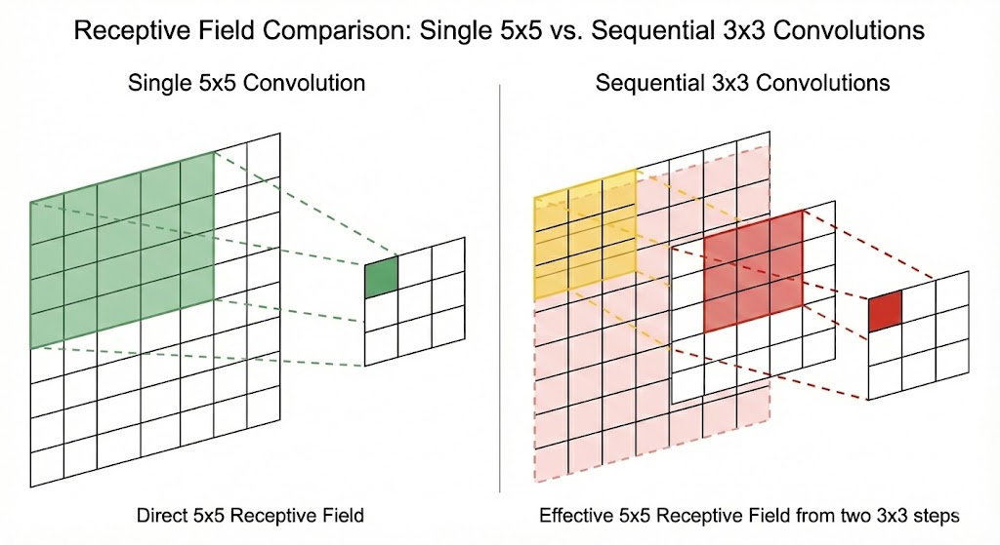
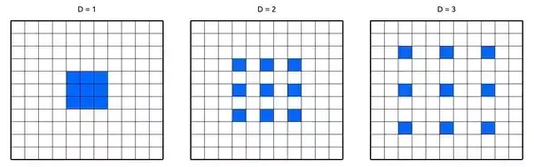
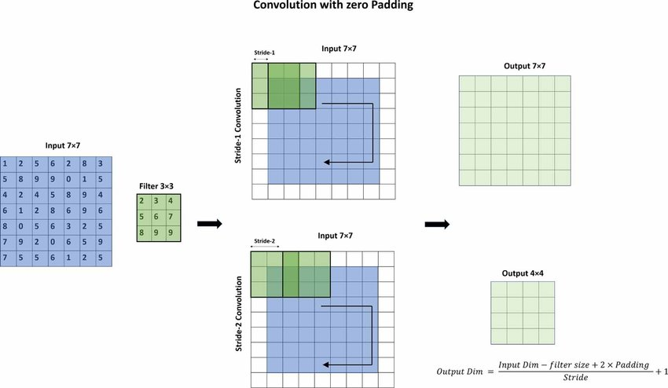
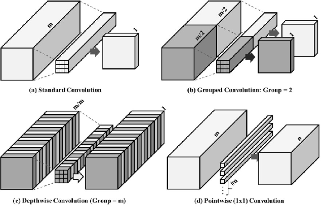
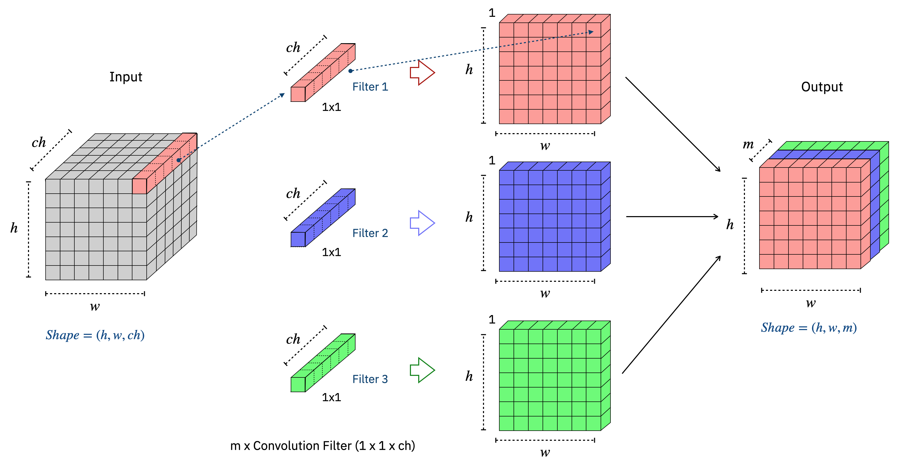
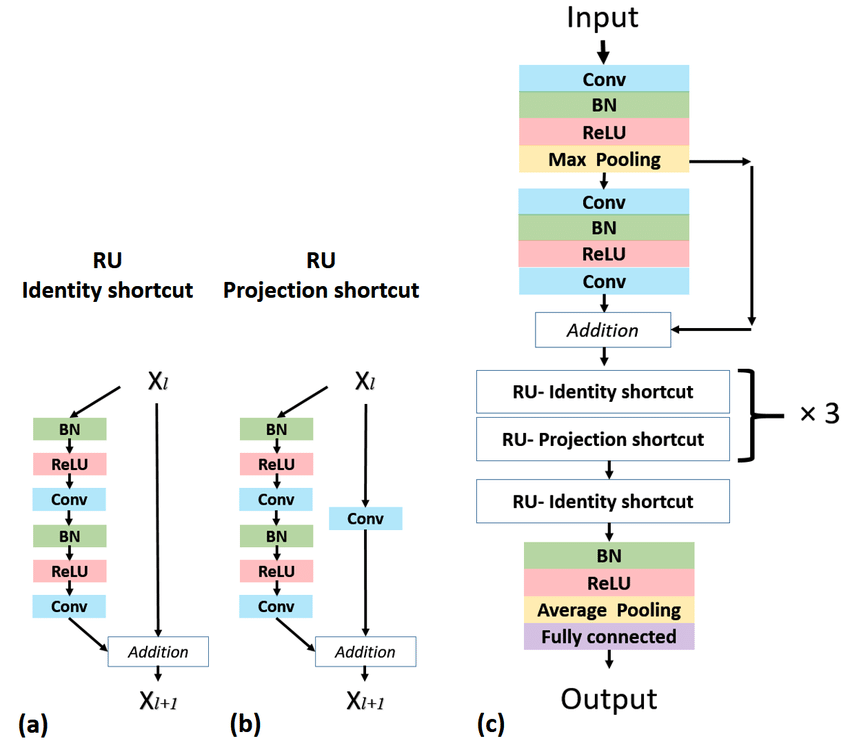

In this chapter, we'll explore how Residual Networks (ResNet) solve the degradation & vanishing gradient problem in deep neural networks.
Let's look at the given graph.

We expected the training/test error for the 56-layer network to be lower than the 20-layer network (since the solution space of a 20-layer network is subset of the solution space of a 56-layer network), but it was the opposite!
Why?
This is primarily due to 2 problems:
Let's look at each one by one
During backpropagation, gradients propagate backward through every layer via the chain rule. For a network with \(L\) layers, the gradient of the loss with respect to the first layer's weights looks like this:
Each term \(\frac{\partial x_{i+1}}{\partial x_i}\) is the Jacobian of that layer's output with respect to its input. For a single layer with weight matrix \(W_i\) and activation \(\sigma\), this Jacobian is:
where \(\sigma'(x_i)\) is the derivative of the activation function — for ReLU, this is either \(0\) or \(1\).
So the full gradient product across \(L\) layers becomes:
This is a product of \(L - 1\) matrices. Two things can go wrong:
Even after reducing vanishing gradients (with better initialization and normalization), deeper plain networks can still train worse.
If a shallow network \(\mathcal{F}_s\) works well, a deeper network \(\mathcal{F}_d\) should match it by letting extra layers learn identity mappings:
\[ \mathcal{F}_d(x) = \mathcal{F}_s(x) \quad \text{if the extra } k \text{ layers learn } h(x) = x \]So the deeper model should achieve at least the same training error.

In practice, this fails: the 56-layer plain net has higher training error than the 20-layer net. This is the degradation problem.
To learn identity, layers must reach \(W \approx I\) and \(b \approx 0\) from random initialization. In deep non-convex optimization, gradient descent often fails to find this path.
Here's how ResNet solves the above problems:
The core idea is simple: instead of asking each layer to learn a complete mapping \(H(x)\) from scratch, ResNet reformulates the problem. If the desired mapping is \(H(x)\), the layers are made to learn the residual:
so the true mapping becomes:
\[ H(x) = F(x) + x \]In the extreme case where identity is optimal, the layers only need to push \(F(x) \to 0\) — i.e., drive weights toward zero — which is far easier for gradient descent than learning \(W \approx I\) from random initialization.
The fundamental building block of ResNet is the residual block. A skip connection (also called a shortcut connection) bypasses one or more layers and adds the input \(x\) directly to the output:

Mathematically, the output of a residual block is:
where \(F(x, \{W_i\})\) is the residual mapping learned by the stacked layers (typically two or three conv layers), and \(x\) is passed through unchanged via the shortcut.
The skip connection creates a direct gradient highway back through the network. During backpropagation, the gradient of the loss with respect to an earlier layer \(x\) becomes:
The \(+\, I\) term means the gradient always has an additive component of \(1\), regardless of what the learned layers do. Even if \(\frac{\partial F}{\partial x}\) is small, the identity term ensures the gradient signal is never completely extinguished — early layers consistently receive a usable gradient.
We'll now implement 2 architectures: ResNet-18 and ResNet-50.
We will now understand the implementation of ResNet-18 Architecture and understand each and every component

Let's understand each component required to code.
def conv3x3(
in_planes: int,
out_planes: int,
stride: int = 1,
groups: int = 1,
dilation: int = 1
) -> nn.Conv2d:
"""3x3 convolution with padding"""
return nn.Conv2d(
in_planes,
out_planes,
kernel_size=3,
stride=stride,
padding=dilation,
groups=groups,
bias=False,
dilation=dilation,
)Let's go through each argument and understand exactly why it's set the way it is.
kernel_size=3A \(3 \times 3\) kernel is the smallest that captures spatial relationships in both dimensions simultaneously. Two stacked \(3 \times 3\) convolutions have the same receptive field as one \(5 \times 5\) convolution, but with fewer parameters and an extra non-linearity between them:
Two \(3 \times 3\) convs use 28% fewer parameters than one \(5 \times 5\), while achieving the same receptive field and adding an extra ReLU in between.

padding=dilationThe padding is set equal to the dilation value, not hardcoded to \(1\). To understand why, we first need to understand what dilation actually does.
In a standard convolution, the kernel samples adjacent pixels — each element of the \(3 \times 3\) kernel touches the pixel right next to it. Dilation inserts gaps between the kernel elements, so the kernel samples pixels that are spread further apart. The kernel size stays \(3 \times 3\), but it now covers a much larger region of the input.
where \(d\) is the dilation factor and \(k\) is the kernel size. For a \(3 \times 3\) kernel:
\[ d = 1 \;\Rightarrow\; 1 \times 2 + 1 = 3 \times 3 \text{ coverage} \] \[ d = 2 \;\Rightarrow\; 2 \times 2 + 1 = 5 \times 5 \text{ coverage} \] \[ d = 3 \;\Rightarrow\; 3 \times 2 + 1 = 7 \times 7 \text{ coverage} \]You get a larger receptive field with the same number of parameters and no extra computation — just wider spacing between the kernel sample points.

Now that we understand dilation, we can see why padding=dilation
is the right default.
Substituting \(\text{kernel} = 3\), \(\text{padding} = d\), \(\text{dilation} = d\), \(\text{stride} = 1\):
\[ H_{\mathrm{out}} = \left\lfloor \frac{H_{\mathrm{in}} + 2d - d \times 2 - 1}{1} + 1 \right\rfloor = H_{\mathrm{in}} \]
The \(2d\) from padding exactly cancels the \(d \times 2\) lost to dilation —
so spatial size is always preserved, for any dilation value.
This is why padding=dilation is not a coincidence — it's
a deliberate identity.
padding=dilation
is what silently guarantees this for every possible dilation value.
stride=1 (default)
When stride=1, the kernel moves one pixel at a time and the
spatial size is preserved (given padding=dilation above).
When stride=2 is passed — which happens at the start of each
new stage in ResNet-18 — the spatial dimensions are halved, acting as a
learned downsampling operation.

groups=1 (default)
groups=1 is a standard convolution — every input channel is
connected to every output channel. Setting groups=C (where C is
the number of channels) gives a depthwise convolution, where
each input channel is convolved independently. ResNet-18 uses groups=1
throughout, but the argument is exposed for variants like ResNeXt which use
grouped convolutions to trade width for depth efficiently.

bias=False
Every conv3x3 in ResNet is immediately followed by a Batch
Normalization layer. BN subtracts the batch mean before scaling, which
cancels out any constant offset — including whatever a conv bias \(b\) would
have added. The learnable shift \(\beta\) inside BN already plays that role:
The mean subtraction \(\mu_{\mathcal{B}}\) cancels any constant offset —
including whatever a conv bias \(b\) would have added. Setting
bias=False removes a redundant parameter that would never
have any effect.
Alongside conv3x3, ResNet defines a second helper — conv1x1.
It looks almost trivially simple, but it does something conv3x3 cannot:
change the number of channels without touching spatial dimensions at all.
def conv1x1(
in_planes: int,
out_planes: int,
stride: int = 1
) -> nn.Conv2d:
"""1x1 convolution"""
return nn.Conv2d(
in_planes,
out_planes,
kernel_size=1,
stride=stride,
bias=False,
)
Notice what's missing compared to conv3x3: no padding,
no groups, no dilation. A \(1 \times 1\) kernel
looks at exactly one spatial location at a time — there's nothing to pad,
no spatial extent to dilate, and grouping across channels is the entire point.
Let's go through each argument.
kernel_size=1A \(1 \times 1\) convolution operates on a single pixel position at a time, across all input channels simultaneously. It applies a learned linear combination across the channel dimension — effectively a per-pixel fully connected layer.
For a single spatial location \((h, w)\):
\[ y_{c'}(h,w) = \sum_{c=1}^{C_{\mathrm{in}}} W_{c', c} \cdot x_c(h, w) \]This is just a dot product between the \(C_{\mathrm{in}}\)-dimensional feature vector at position \((h, w)\) and the \(c'\)-th row of the weight matrix \(W \in \mathbb{R}^{C_{\mathrm{out}} \times C_{\mathrm{in}}}\). No spatial mixing — only channel mixing.
This means a \(1 \times 1\) conv can project any number of input channels to any number of output channels, independently at every spatial location, with no change to \(H\) or \(W\):
Compare this to a \(3 \times 3\) conv with \(9 \times C_{\mathrm{in}} \times C_{\mathrm{out}}\) parameters. A \(1 \times 1\) conv is 9× cheaper for the same channel projection — which is precisely why the Bottleneck block uses it to compress channels before the expensive \(3 \times 3\) conv.

In ResNet-18, conv1x1 appears in exactly one place: the
projection shortcut. Recall that the skip connection requires
\(F(x)\) and \(x\) to have the same shape for the addition \(F(x) + x\) to work.
When a residual block downsamples spatially (stride=2) or changes channel depth,
the identity shortcut breaks — shapes no longer match.
The projection shortcut fixes this by applying a \(1 \times 1\) conv to \(x\) to match the required shape:
where \(W_s\) is implemented as
conv1x1(in_planes, out_planes, stride=stride).
The \(1 \times 1\) kernel changes the channel count, and the stride simultaneously
halves the spatial dimensions — matching \(F(x)\) exactly, with minimal parameters.

stride=1 (default)
Like in conv3x3, stride defaults to \(1\) but can be set to \(2\)
when used as a projection shortcut. Since a \(1 \times 1\) kernel has no spatial
extent, stride is the only mechanism by which this conv can change spatial
size — there's no kernel overlap to exploit, so the stride directly controls
the downsampling factor.
bias=False
Same reason as in conv3x3 — every conv1x1 in ResNet
is followed by Batch Normalization, whose learnable \(\beta\) already provides
a per-channel trainable offset. A conv bias would be redundant and immediately
cancelled by the BN mean subtraction.
padding argument is needed here. A
\(1 \times 1\) kernel always produces an output the same spatial size as the
input (before stride) — there are no border effects to compensate for, so
padding is always \(0\).
conv1x1 is the shape-matching
primitive of ResNet. It lets the network change channel depth and spatial size
on the shortcut path cheaply — keeping the residual addition valid across every
stage transition without adding significant parameters or computation.